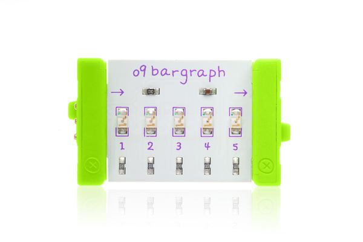
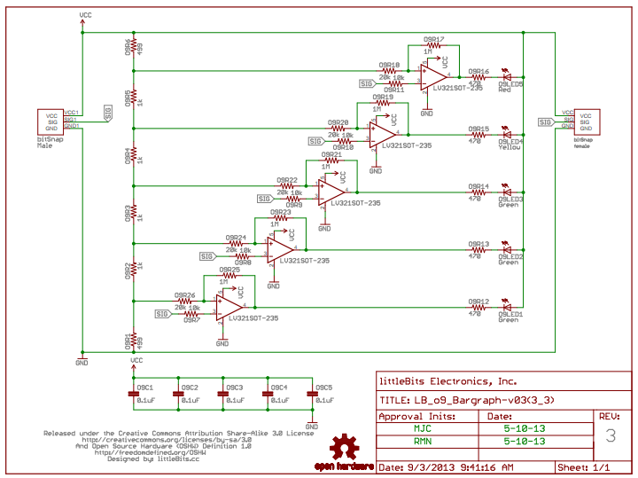

Tkalci na webu
Michal Valoušek — @msgre
https://github.com/msgre/littlebits-talk
To put the power of electronics in the hands of everyone
littleBits is born out of the Maker Movement and we have been helping lead the Open Hardware Movement.
[...]
Our designs are publicly available so that anyone can see, use and adapt them to their needs.
|  |  |